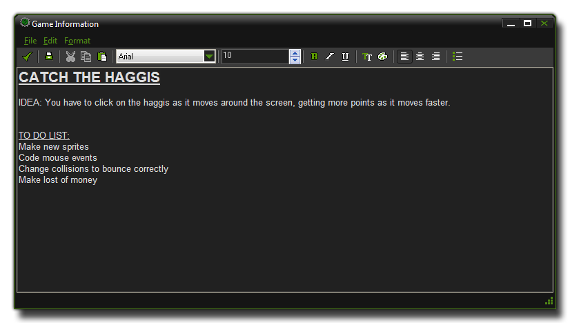

Game Information
This section deals with the Game Information window.
Beneath the resource tree on the left of the main GameMaker:Studio IDE you have the Game Information. Clicking on this will bring up a rich text editor as shown in the following image:

The game information is basically a scratch pad for you, where you can draught out ideas, to-do lists, contact details and any other information that you may need at a later date or that you don't want to forget. Unlike
previous versions of GameMaker this form cannot be shown to the player and as such it is the ideal place to store snippets of information and to plan your game.
Back : Using GameMaker:Studio
Next : Distributing Your Game